금속재료기능장 (2011-04-17 기출문제)
1과목: 임의 구분
1. 와류탐상시험의 특징을 설명한 것 중 틀린 것은?
- 도체에만 적용된다.
- 상온에서만 시험이 가능하다.
- 내부결함의 검출이 곤란하다.
- 결함의 종류, 형상, 치수를 정확하게 판별하기 어렵다.
(정답률: 65%)

2. 동일한 조건하에서 다음 중 냉각능이 가장 빠른 것은?
- 물
- 기름
- 공기
- 노내
(정답률: 75%)
3. 페라이트계 스테인리스강에서 가공에 의한 경화를 제거하고 인성을 부여하기 위한 열처리는?
- 풀림
- 불림
- 뜨임
- 담금질
(정답률: 69%)
4. 칠드주물에서 칠(Chill)의 깊이를 증가시키는 원소는?
- Mn
- Al
- C
- Si
(정답률: 65%)
5. 금속재료에 응력을 반복해서 가하면 그 응력이 1회에 가하여 파괴되는 응력보다 훨씬 작아도 그 재료가 파괴될 수 있는 현상은?
- 취성파괴
- 피로파괴
- 전성파괴
- 응력부식파괴
(정답률: 80%)
6. 철강에 인성을 부여하고 비틀림이나 균열을 방지하기 위한 열처리로서 오스템퍼링(Austempering)을 실시하였을 때 나타나는 조직명은?
- 마텐자이트(martensite)
- 시멘타이트(cementite)
- 페라이트(ferrite)
- 베이나이트(bainite)
(정답률: 58%)
7. 강재의 초음파탐상시 결함들의 크기, 형태 및 위치가 동일하게 존재한다고 가정할 때 이들 결함반사파 중 반사파의 크기가 가장 크게 나타나는 것은?
- 기공
- 슬래그 혼입
- 텅스텐 혼입
- 모두 동일하게 나타난다.
(정답률: 70%)
8. 내마모성이 우수한 고망간 강으로 오스테나이트 조직을 갖는 강은?
- 듀콜 강
- 해드필드 강
- 림드 강
- 마그네트 강
(정답률: 69%)
9. 염욕(salt bath)제로서의 구비조건 중 틀린 것은?
- 흡습성이 커야 한다.
- 점성이 작아야 한다.
- 불순물이 적어야 한다.
- 용해가 쉽고 조해성이 작아야 한다.
(정답률: 65%)
10. 고용체에 대한 설명 중 틀린 것은?
- 다른 요소가 동일하다면 금속은 낮은 원자가를 갖는 금속보다는 높은 원자가를 갖는 금속에 더 많이 용해된다.
- 두 원자간의 반지름 차이가 대략 15% 미만일 경우에는 상당한 양의 용질원자가 치환형 고용체로 수용될 수 있다.
- 많은 고용도를 갖기 위해서는 두 원자종의 금속이 같은 결정구조를 가지고 있어야 한다.
- 두 원소간의 전기 음성도 차가 크면 클수록 치환형 고용체 보다는 금속간 화합물을 형성하기가 어렵다.
(정답률: 43%)
11. 초음파비파괴검사에 사용되는 탐촉자의 선정기준으로 틀린 것은?
- 결함위치의 측정 정밀도를 높이기 위해서는 고주파수를 사용한다.
- 결정립계에서 산란 등에 의한 임상에코가 나타나는 것은 저주파수를 사용한다.
- 결함의 위치를 정확히 측정하기 위해서 지향성이 예리하도록 진동자치수는 작은 것을 사용한다.
- 초음파가 결함에 수직으로 부딪히게 가능한 한 짧은 빔거리로 탐상할 수 있는 굴절각을 사용한다.
(정답률: 56%)
12. 로의 온도 제어 장치에서 온-오프(on-off)의 시간비를 편차에 비례하도록 제어하는 온도 제어 장치의 명칭은?
- 정치식 제어
- 비례식 제어
- 프로그램식 제어
- 온-오프(on-off)식 제어
(정답률: 65%)
13. 결정입도 측정법에 있어 시험면을 적당한 배율로 확대한 사진 위에 일정길이의 직선을 임의방향으로 긋고 이 직선과 결정립이 만나는 점의 수를 측정하여 단위 길이당 교차점의 수를 표시하는 방법은?
- 비교법
- 제퍼리스법
- 헤인법
- 조직량 측정법
(정답률: 79%)
14. 로크웰 경도시험에 있어 1/16 인치 강구를 사용하고 시험하중이 100kg의 일정하중을 적용할 때의 스케일은?
- A scale
- B scale
- C scale
- D scale
(정답률: 71%)
15. 담금질 처리시 연점(soft spot)이 생기는 것을 방지하는 대책으로 틀린 것은?
- 노내 온도 분포를 고르게 한다.
- 가열 온도 및 가열 시간을 적절하게 한다.
- 냉각제를 충분히 교반한 후에 담금질한다.
- 탈탄 부분을 제거하기 전에 담금질한다.
(정답률: 72%)
16. 자동차의 경량화 재료 활용을 위해 HSLA강의 결점 보강을 위한 재료는?
- 파인세라믹스
- DP강(복합조직강)
- 두랄루민
- 베릴륨합금
(정답률: 77%)
17. 방사선투과사진의 명암도에 영향을 주는 요소가 아닌 것은?
- 필름의 종류
- 현상액의 강도
- 산란방사선
- 스크린-필름의 접촉상태
(정답률: 60%)
18. 취성재료의 균열 전파에 필요한 임계 응력의 크기(σc)를 구하는 식은? (단, E=탄성에너지, γs=비표면 에너지, a=내부 균열길이의 1/2 이다.)
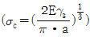
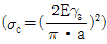
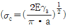
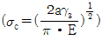
(정답률: 71%)
19. 가스질화법에서 암모니아 가스가 고온으로 가열될 때 분해과정을 나타낸 식으로 옳은 것은?
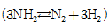
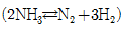
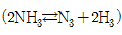
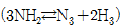
(정답률: 64%)
20. 운반 작업장에서 사용하는 리프트(Lift)용 와이어로프의 안전 기준에 대한 설명으로 틀린 것은?
- 로프가 꼬이지 않을 것
- 현저한 변형, 마모 부식 등이 없을 것
- 소선의 수가 25% 이상 절단되지 않을 것
- 지름의 감소가 공칭지름의 7%를 초과하지 않을 것
(정답률: 66%)
2과목: 임의 구분
21. 산업재해의 원인 중 교육적 원인에 해당되지 않는 것은?
- 안전지식의 부족
- 안전수칙이 제정되어 있지 않음
- 안전수칙을 잘못 알고 있음
- 경험, 훈련 등이 서투름
(정답률: 74%)
22. 강철의 결정입도번호(ASTM grain size No)가 8일 경우 100배의 배율에서 1평방인치당 현미경 사진 내에 들어있는 결정 입자수는?
- 8
- 16
- 64
- 128
(정답률: 57%)
23. 다음 중 Al 합금을 개량처리 하여 강화시킨 합금은?
- 실루민
- 엘린바
- 콘스탄탄
- 모넬메탈
(정답률: 63%)
24. 동합금 중에서 강도와 경도가 가장 높은 석출 경화형 구리합금은?
- 연 청동
- 인 청동
- 베릴륨 청동
- 알루미늄 청동
(정답률: 68%)
25. 사고예방대책 제5단계의 “시정책의 적용”에서 3E와 관계가 없는 것은?
- 재정(Economics)
- 기술(Engineering)
- 교육(Education)
- 독려(Enforcement)
(정답률: 64%)
26. 어닐링(annealing) 열처리에서 황(S) 함량이 높은 쾌삭강이나 압연조직의 입계에 나타나는 황화물의 편석을 미세하게 분포시키기 위한 열처리는?
- 확산 어닐링
- 연화 어닐링
- 응력제거 어닐링
- 재결정 어닐링
(정답률: 68%)
27. 금속의 재결정에 대한 설명으로 틀린 것은?
- 금속의 순도가 높을수록 재결정 진행이 방해된다.
- 가공전 결정립이 작을수록 재결정 완료 후의 결정립은 작다.
- 재결정 처리온도가 높을수록 재결정이 빨리 진행된다.
- 변형량이 많을수록 재결정이 빨리 진행된다.
(정답률: 58%)
28. 설퍼프린트 시험에 관한 내용이 틀린 것은?
- 이 시험은 강 중에 있는 S의 편석이나 분포상태를 알수 있는 시험이다.ㄴ
- 인화지를 5∼10% 질산수용액에 10∼20분 담근 인화지를 사용한다.
- MnS+H2SO4→MnSO4+H2S와 같은 반응식을 나타낸다.
- 피검면을 재차 시험할 때는 0.5mm 이상 연삭 후 시험한다.
(정답률: 74%)
29. CAD 시스템에서 3차원 모델링 방법 중 솔리드 모델링의 특징을 설명한 것 중 옳은 것은?
- 은선의 제거가 가능하다.
- 물리적 성질 등의 계산이 불가능하다.
- 형상을 절단한 단면도 작성이 불가능하다.
- 이동, 회전 등을 할 수 없어 형상 파악이 어렵다.
(정답률: 77%)
30. 금속이 응고될 때 불순물이 최종적으로 모이는 곳은?
- 결정립계
- 결정의 모서리
- 금속의 표면
- 결정립의 중심부
(정답률: 75%)
31. 다이캐스팅용 아연합금의 입간부식을 억제하는 원소는?
- Cu
- Sn
- Cd
- Pb
(정답률: 45%)
32. 판재를 원판으로 뽑기 위해 하중 9400kgf를 가했을 때 전단응력은 약 몇 kgf/cm2인가? (단, 직경(d)=30mm, 판재의 두께(t)=2.8mm 이다.)
- 2562
- 3562
- 4562
- 5562
(정답률: 52%)
33. 열전대의 종류와 그 성분, 상용온도 범위에 대한 설명이 틀린 것은?
- R type은 (+)87Rh-13Pt, (-)Pt 이며, 상용한도는 약 1400℃이다.
- K type은 (+)90Ni-10Cr, (-)94Ni, 3Al, 1Si, 2Mn 이며, 상용한도는 약 1000℃이다.
- J type은 (+)Fe, (-)55Cu-45Ni 이며, 상용한도는 약 600℃이다.
- T type은 (+)Cu, (-)55Cu-45Ni 이며, 상용한도는 약 300℃이다.
(정답률: 47%)
34. Ni 및 Al의 주된 슬립면은?
- {100}
- {110}
- {111}
- {211}
(정답률: 76%)
35. 탄소강에 함유된 원소의 영향을 설명한 것 중 틀린 것은?
- 탄소는 강의 경도를 향상시키는데 가장 효과적이며, Fe, Cr, Mo, V 등의 원소와 결합하여 강도 및 경도를 향상시킨다.
- 황은 강의 유동성을 해치고 Mn의 양이 부족하면 FeS화합물을 이루어 고온에서 약한 적열취성의 원인이 된다.
- 인은 강 속에 비교적 균일하게 분포되어 있으며 입계에서 Fe3P의 화합물을 만들어 충격저항을 향상시킨다.
- 망간은 강 내에 함유된 황과 결합하여 MnS 비금속 개재물을 만들어 결정립계에 형성되는 취약하고 저융점 화합물인 FeS의 형성을 억제시킨다.
(정답률: 59%)
36. 자분탐상검사의 방법 중 시험체의 구멍을 통과시킨 도체에 전류를 흘려보내어 자화시키며 탐상하는 검사 방법은?
- 극간법
- 축 통전법
- 자속 관통법
- 전류 관통법
(정답률: 66%)
37. 주조결질합금으로 주조한 상태로 사용하는 스텔라이트(stellite)의 주성분이 아닌 것은?
- W
- V
- Co
- Cr
(정답률: 64%)
38. 물체의 위치, 방향, 자세 등을 제어량으로 하는 분야에 사용되는 서보(servo) 기구의 특징이 아닌 것은?
- 원격 제어보다는 주로 근거리 제어에 쓰인다.
- 목표치가 광범위하게 변화할 수 있다.
- 피드 백(feed back) 제어이다.
- 제어량이 기계적 변위이다.
(정답률: 52%)
39. 탄소강에서 탄소량의 증가에 따라 감소하지 않는 것은?
- 비열
- 비중
- 열전도율
- 열팽창계수
(정답률: 55%)
40. 표면경화에서 침탄 담금질의 결함인 담금질 경도부족의 원인으로 틀린 것은?
- 침탄량이 부족할 때
- 담금질 온도가 너무 낮을 때
- 잔류 오스테나이트가 많을 때
- 담금질 냉각속도가 빠를 때
(정답률: 63%)
3과목: 임의 구분
41. 마그네슘(Mg)에 대한 설명으로 틀린 것은?
- 내알칼리성은 극히 나쁘나 내산성은 강하다.
- 소성가공서이 낮아 상온변형이 곤란하다.
- 감쇠능이 주철보다 커서 소음방지 구조재료로 사용된다.
- Fe를 함유할 때 내식성이 극히 나쁘며, Mn 첨가로 Fe 유해작용을 방지할 수 있다.
(정답률: 44%)
42. 강도/중량비가 높고 내식성이 좋으며 항공기의 기체재료등으로 사용되는 금속으로 비중이 약 4.5이며, 조밀육방격자의 금속은?
- Cu
- Ni
- Ti
- Fe
(정답률: 72%)
43. 다음 중 비정질 합금의 특성으로 틀린 것은?
- 결정이방성이 없다.
- 구조적으로는 장거리의 규칙성이 없다.
- 강도가 낮고 연성이 커서 가공경화를 잘 일으킨다.
- 고온으로 가열하면 결정화가 일어난다.
(정답률: 58%)
44. 고주파 담금질로 인한 균열의 발생 및 대책에 관한 설명중 틀린 것은?
- 탄소가 0.4% 이상 함유시 균열이 발생하기 쉬우며 탄함유량이 많으면 탄화물을 구상화 처리한다.
- 균열을 방지하기 위해서는 예열을 하지 않고 계속적으로 전기를 통하면서 가열 후 풀림처리 한다.
- 분무에 의한 담금질로 냉간 얼룩을 줄이며 담금질 후 즉시 저온뜨임을 한다.
- 고주파 담금질 한 후 그대로 방치하면 자연균열이 발생하므로 저온뜨임을 한다.
(정답률: 67%)
45. 담금질 균열의 발생 방지 방법 중 틀린 것은?
- 담금질 직후에 뜨임을 한다.
- 모서리의 예리한 부분은 둥글게 설계한다.
- 비금속 개재물 및 편석이 적은 재료를 선택한다.
- 항온변태 곡선의 코(nose)까지 서냉하고 Ms점 이하에서 급냉한다.
(정답률: 69%)
46. 인장시험을 함으로써 알아볼수 있는 재료의 물리적 성질이 아닌 것은?
- 인장강도
- 단면수축율
- 연신율
- 흡수에너지
(정답률: 74%)
47. 그림과 같이 면심입방격자(FCC)로 된 A 원자와 B 원자의 규칙격자 원자배열에서 A와 B의 조성을 나타내는 것은?
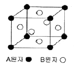
- AB
- AB3
- A3B
- A3B3
(정답률: 73%)
48. 담금질(quenching)한 후 현미경조직 시험에서 표면층에 백색으로 나타나는 탈탄된 표면 부근의 조직 명칭은?
- 페라이트(Ferrite)
- 시멘타이트(Cementite)
- 마텐자이트(Martensite)
- 소르바이트(Sorbite)
(정답률: 40%)
49. 현미경시험에서 소재를 검사하는 목적으로 틀린 것은?
- 전위와 석출물을 관찰하기 위해
- 화학성분과 기계적 성질을 관찰하기 위해
- 결정립의 크기를 확인하기 위하여
- 핀홀 및 수축공 등의 미세 결함을 검출하기 위하여
(정답률: 74%)
50. 담금질경도 깊이가 강의 화학성분에 따라 크게 영향이 있는 성질을 담금질성(hardenability)라고 하는데 이 담금질성에 영향이 가장 큰 화학성분은?
- C%
- Mo%
- Mn%
- Cr%
(정답률: 53%)
51. 제품을 가열하여 표면에 알루미늄을 피복 및 확산시켜 합금 피복층을 얻는 금속침투법은?
- Sherardizing
- Chromizing
- Boronizing
- Calorizing
(정답률: 75%)
52. 그림과 같은 제품에서 냉각 속도가 가장 빠른 부분은?
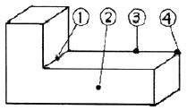
- ①
- ②
- ③
- ④
(정답률: 80%)
53. 연강(저탄소강)의 기계적 성질을 각 온도범위에서 측정할 경우 청열취성이 나타날 가능성이 있는 온도범위는?
- 100∼200℃
- 200∼300℃
- 300∼400℃
- 400∼500℃
(정답률: 63%)
54. 비커즈 경도계의 다이아몬드 피라미드의 꼭지 대면각은 몇 도인가?
- 120°
- 136°
- 148°
- 150°
(정답률: 75%)
55. Ralph M. Barnes 교수가 제시한 동작경제의 원칙 중 작업장 배치에 관한 원칙(Arrangement of the eorkplace)에 해당되지 않는 것은?
- 가급적이면 낙하식 운반방법을 이용한다.
- 모든 공구나 재료는 지정된 위치에 있도록 한다.
- 충분한 조명을 하여 작업자가 잘 볼 수 있도록 한다.
- 가급적 용이하고 자연스런 리듬을 타고 일할 수 있도록 작업을 구성하여야 한다.
(정답률: 55%)
56. 다음 중 계량값 관리도에 해당되는 것은?
- c 관리도
- nP 관리도
- R 관리도
- u 관리도
(정답률: 71%)
57. 다음 검사의 종류 중 검사공정에 의한 분류에 해당되지 않는 것은?
- 수입검사
- 출하검사
- 출장검사
- 공정검사
(정답률: 80%)
58. 품질코스트(quality cost)를 예방코스트, 실패코스트, 평가코스트로 분류할 때, 다음 중 실패코스트(failure cost)에 속하는 것이 아닌 것은?
- 시험 코스트
- 불량대책 코스트
- 재가공 코스트
- 설계변경 코스트
(정답률: 66%)
59. 그림과 같은 계획공정도(Network)에서 주공정은? (단, 화살표 아래의 숫자는 활동시간을 나타낸 것이다.)
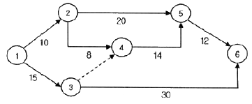
- ①-③-⑥
- ①-②-⑤-⑥
- ①-②-④-⑤-⑥
- ①-③-④-⑤-⑥
(정답률: 69%)
60. 로트 크기 1000, 부적합품률이 15%인 로트에서 5개의 랜덤시료 중에서 발견된 부적합품수가 1개일 확률을 이항분포로 계산하면 약 얼마인가?
- 0.1648
- 0.3915
- 0.6085
- 0.8352
(정답률: 49%)